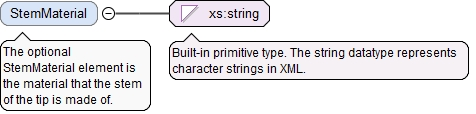

The required n attribute is the number of qualifications in the list.
Source
<xs:element name="Qualifications" type="QualificationsType" minOccurs="0"><xs:annotation><xs:documentation>The optional Qualifications element is a list of qualifications of the simple tactile probe.</xs:documentation></xs:annotation></xs:element>
<xs:element name="Length" type="LinearValueType" minOccurs="0"><xs:annotation><xs:documentation>The optional StylusLength element is the length of the tactile probe from the point where the probe attaches to the tool to the end of the tip.</xs:documentation></xs:annotation></xs:element>
<xs:element name="TipEndGeometry" type="TipEndGeometryType" minOccurs="0"><xs:annotation><xs:documentation>The optional TipEndGeometry element is the shape of the end of the tip, i.e. the thing at the end of the tip that contacts an object being probed.</xs:documentation></xs:annotation></xs:element>
<xs:element name="TipEndDiameter" type="LinearValueType" minOccurs="0"><xs:annotation><xs:documentation>The optional TipEndDiameter element is the nominal diameter of the end of the probe tip.</xs:documentation></xs:annotation></xs:element>
The optional TipEndMaterial element is the material that the tip end is made of.
Diagram
Type
xs:string
Properties
content
simple
minOccurs
0
Source
<xs:element name="TipEndMaterial" type="xs:string" minOccurs="0"><xs:annotation><xs:documentation>The optional TipEndMaterial element is the material that the tip end is made of.</xs:documentation></xs:annotation></xs:element>
The optional StemMaterial element is the material that the stem of the tip is made of.
Diagram

Type
xs:string
Properties
content
simple
minOccurs
0
Source
<xs:element name="StemMaterial" type="xs:string" minOccurs="0"><xs:annotation><xs:documentation>The optional StemMaterial element is the material that the stem of the tip is made of.</xs:documentation></xs:annotation></xs:element>
<xs:element name="StemDiameter" type="LinearValueType" minOccurs="0"><xs:annotation><xs:documentation>The optional StemDiameter element is the diameter of the stem of the probe.</xs:documentation></xs:annotation></xs:element>
The SimpleTactileProbeSensorType defines a detachable tactile probe with a single tip that extends straight from its mounting. The tip may or may not be detachable from the body of the probe.
The required id attribute is the QIF id of the measurement resource, used for referencing.
Source
<xs:complexType name="SimpleTactileProbeSensorType"><xs:annotation><xs:documentation>The SimpleTactileProbeSensorType defines a detachable tactile probe with a single tip that extends straight from its mounting. The tip may or may not be detachable from the body of the probe.</xs:documentation></xs:annotation><xs:complexContent><xs:extension base="TactileProbeSensorBaseType"><xs:sequence><xs:element name="Qualifications" type="QualificationsType" minOccurs="0"><xs:annotation><xs:documentation>The optional Qualifications element is a list of qualifications of the simple tactile probe.</xs:documentation></xs:annotation></xs:element><xs:element name="Length" type="LinearValueType" minOccurs="0"><xs:annotation><xs:documentation>The optional StylusLength element is the length of the tactile probe from the point where the probe attaches to the tool to the end of the tip.</xs:documentation></xs:annotation></xs:element><xs:element name="TipEndGeometry" type="TipEndGeometryType" minOccurs="0"><xs:annotation><xs:documentation>The optional TipEndGeometry element is the shape of the end of the tip, i.e. the thing at the end of the tip that contacts an object being probed.</xs:documentation></xs:annotation></xs:element><xs:element name="TipEndDiameter" type="LinearValueType" minOccurs="0"><xs:annotation><xs:documentation>The optional TipEndDiameter element is the nominal diameter of the end of the probe tip.</xs:documentation></xs:annotation></xs:element><xs:element name="TipEndMaterial" type="xs:string" minOccurs="0"><xs:annotation><xs:documentation>The optional TipEndMaterial element is the material that the tip end is made of.</xs:documentation></xs:annotation></xs:element><xs:element name="StemMaterial" type="xs:string" minOccurs="0"><xs:annotation><xs:documentation>The optional StemMaterial element is the material that the stem of the tip is made of.</xs:documentation></xs:annotation></xs:element><xs:element name="StemDiameter" type="LinearValueType" minOccurs="0"><xs:annotation><xs:documentation>The optional StemDiameter element is the diameter of the stem of the probe.</xs:documentation></xs:annotation></xs:element></xs:sequence></xs:extension></xs:complexContent></xs:complexType>